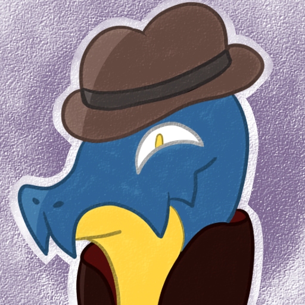

Snaky
Snaky is a small Discord bot that I code on my spare time.
This bot is aimed at allowing users to create themselves custom commands,
especially emotes, as well as some other few things.
Snaky was created in november 2017 as a bot for my friends' discord server.
At first, it didn't have much success, but with some time and new commands,
it started getting some use.